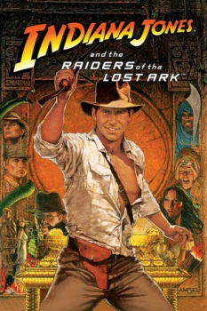

Country:United States, 115 minutes
Spoken languages:
Genres:Adventure, Action
Director(s):Steven Spielberg
Writer(s):Lawrence Kasdan
Video Codec:Unknown
Number: 1035

Certification:
Storyline:
When Dr. Indiana Jones – the tweed-suited professor who just happens to be a celebrated archaeologist – is hired by the government to locate the legendary Ark of the Covenant, he finds himself up against the entire Nazi regime.
Cast:
Medium: Original DVD,
Comments: Part of: Indiana Jones - The Complete Adventure Collection
Loaned: No
Aspect ratio: Unknown